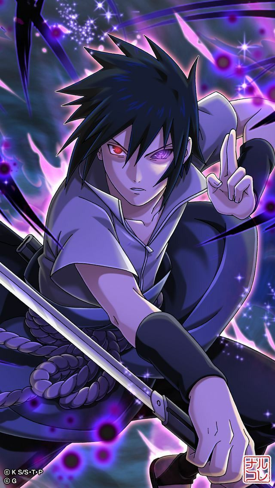

PERSONAJES PRINCIPALES
Naruto uzumaki es el protagonista de la serie del manga y anime Naruto y Naruto Shippūden. Asimismo es partícipe del manga y anime Boruto: Naruto Next Generations, secuela de la obra original de Masashi Kishimoto. Es residente de Konohagakure, hijo del Cuarto Hokage, Minato Namikaze y su esposa Kushina Uzumaki, además de ser la actual reencarnación de Asura Ōtsutsuki.
es el deuteragonista de la serie y uno de los supervivientes del Clan Uchiha. Es hijo de Fugaku Uchiha y Mikoto Uchiha, hermano de Itachi Uchiha, así como la Reencarnación actual de Indra Ōtsutsuki.
Sakura Haruno cuyo nombre actual es Sakura Uchiha es uno de los personajes principales de la serie. Es una kunoichi de nivel Jōnin, miembro del Equipo Kakashi y una gran amiga de Naruto Uzumaki. Después de su entrenamiento con Tsunade, se convierte en una Ninja Médico. Finalmente se convirtió en la esposa de Sasuke Uchiha y en madre de Sarada Uchiha.